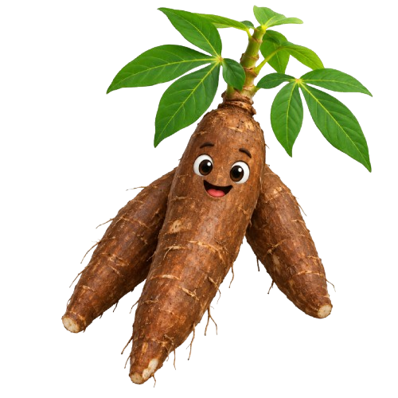

Guru: Budi Hartati, SP, MP
Sekolah: SPNF SKB WONOGIRI
Membuka Mata & Menyadari Masalah. Mari asah kejelianmu melihat masalah plastik di sekitar kita!
Bumi menghadapi krisis penumpukan sampah plastik konvensional yang butuh ratusan tahun untuk terurai. Sampah mencemari tanah, menyumbat saluran air, hingga menjadi mikroplastik berbahaya bagi kesehatan.
Temukan 3 benda plastik di sekitarmu:
Menyelidiki & Memahami Rahasia Sains Bioplastik.
Pati singkong (tapioka) mengandung polimer alami berupa amilosa dan amilopektin. Dengan tambahan formulasi yang tepat, kita bisa mengubah struktur molekulnya menjadi fleksibel layaknya plastik.
Aksi Eksperimen Mandiri & Pencatatan Temuan Kelompok.
| Parameter | Hasil Pengamatan |
|---|---|
| Warna | |
| Tekstur & Permukaan | |
| Ketebalan & Bentuk | |
| Kelenturan & Kekuatan | |
| Kendala Pengeringan |
Berbagi Temuan, Refleksi, dan Mengunduh Laporan Akhir.
Selamat! Kamu telah berhasil melompat hingga anak tangga tertinggi.
Laporan digital seluruh halamanmu sedang disimpan sebagai PDF.
Mari terus berinovasi untuk menjaga kelestarian bumi kita! 🌱